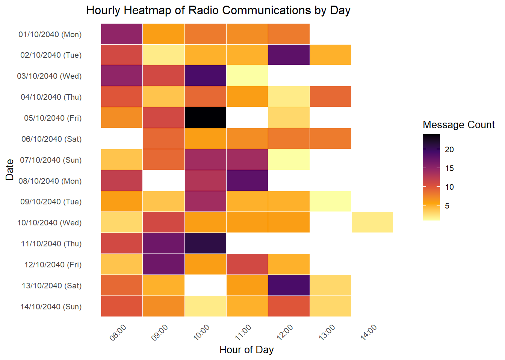
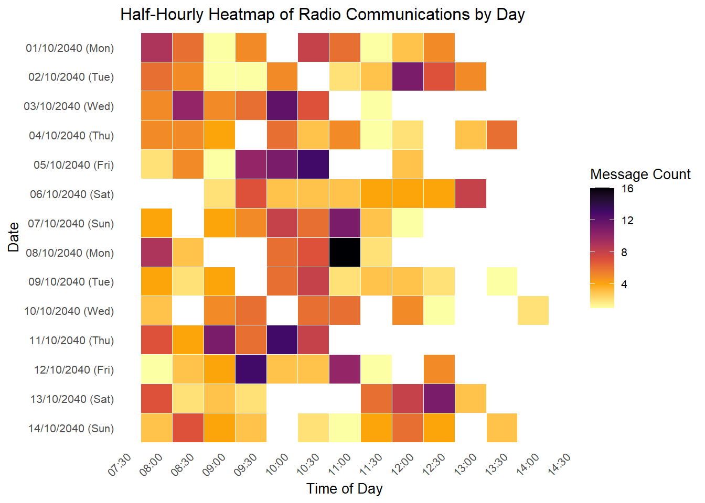

pacman::p_load(tidyverse, jsonlite,
tidygraph, ggraph, SmartEDA,
ggrepel, scales, lubridate, dplyr, viridis)Take-Home Assignment 2
Take Home Assignment 2 on Mini-Challenge 3
1 - Getting Started
1.1 - Load the R packages for this assignment
For the purpose of this assignment, five R packages will be used. They are tidyverse, jsonlite, tidygraph, ggraph and SmartEDA.
In the code chunk below, p_load() of pacman package is used to load the R packages into R environment.
1.2 - Importing Knowledge Graph Data
For the purpose of this exercise, mc3.json file will be used. Before getting started, you should have the data set in the data sub-folder.
In the code chunk below, fromJSON() of jsonlite package is used to import mc3.json file into R and save the output object
MC3 <- fromJSON("data/MC3_graph.json")
MC3_schema <- fromJSON("data/MC3_schema.json")1.3 - Data Overview
The dataset was provided by VAST Challenge for MC3. This report utilizes two core datasets: MC3_graph.json, which encodes the knowledge graph of communications, events, and relationships; and MC3_schema.json, which defines the structure, subtypes, and attributes of each node and edge type within the graph. There ngraph contains a total of 1159 nodes and 3226 edges. Full description of node attributes and edge attributes is shown below.
Nodes Attributes are as such:

Edge Attributes are as such:

1.4 - Inspecting knowledge graph structure
Before preparing the data, it is always a good practice to examine the structure of mc3 knowledge graph.
In the code chunk below glimpse() is used to reveal the structure of mc3 knowledge graph.
glimpse(MC3)List of 5
$ directed : logi TRUE
$ multigraph: logi FALSE
$ graph :List of 4
..$ mode : chr "static"
..$ edge_default: Named list()
..$ node_default: Named list()
..$ name : chr "VAST_MC3_Knowledge_Graph"
$ nodes :'data.frame': 1159 obs. of 31 variables:
..$ type : chr [1:1159] "Entity" "Entity" "Entity" "Entity" ...
..$ label : chr [1:1159] "Sam" "Kelly" "Nadia Conti" "Elise" ...
..$ name : chr [1:1159] "Sam" "Kelly" "Nadia Conti" "Elise" ...
..$ sub_type : chr [1:1159] "Person" "Person" "Person" "Person" ...
..$ id : chr [1:1159] "Sam" "Kelly" "Nadia Conti" "Elise" ...
..$ timestamp : chr [1:1159] NA NA NA NA ...
..$ monitoring_type : chr [1:1159] NA NA NA NA ...
..$ findings : chr [1:1159] NA NA NA NA ...
..$ content : chr [1:1159] NA NA NA NA ...
..$ assessment_type : chr [1:1159] NA NA NA NA ...
..$ results : chr [1:1159] NA NA NA NA ...
..$ movement_type : chr [1:1159] NA NA NA NA ...
..$ destination : chr [1:1159] NA NA NA NA ...
..$ enforcement_type : chr [1:1159] NA NA NA NA ...
..$ outcome : chr [1:1159] NA NA NA NA ...
..$ activity_type : chr [1:1159] NA NA NA NA ...
..$ participants : int [1:1159] NA NA NA NA NA NA NA NA NA NA ...
..$ thing_collected :'data.frame': 1159 obs. of 2 variables:
.. ..$ type: chr [1:1159] NA NA NA NA ...
.. ..$ name: chr [1:1159] NA NA NA NA ...
..$ reference : chr [1:1159] NA NA NA NA ...
..$ date : chr [1:1159] NA NA NA NA ...
..$ time : chr [1:1159] NA NA NA NA ...
..$ friendship_type : chr [1:1159] NA NA NA NA ...
..$ permission_type : chr [1:1159] NA NA NA NA ...
..$ start_date : chr [1:1159] NA NA NA NA ...
..$ end_date : chr [1:1159] NA NA NA NA ...
..$ report_type : chr [1:1159] NA NA NA NA ...
..$ submission_date : chr [1:1159] NA NA NA NA ...
..$ jurisdiction_type: chr [1:1159] NA NA NA NA ...
..$ authority_level : chr [1:1159] NA NA NA NA ...
..$ coordination_type: chr [1:1159] NA NA NA NA ...
..$ operational_role : chr [1:1159] NA NA NA NA ...
$ edges :'data.frame': 3226 obs. of 5 variables:
..$ id : chr [1:3226] "2" "3" "5" "3013" ...
..$ is_inferred: logi [1:3226] TRUE FALSE TRUE TRUE TRUE TRUE ...
..$ source : chr [1:3226] "Sam" "Sam" "Sam" "Sam" ...
..$ target : chr [1:3226] "Relationship_Suspicious_217" "Event_Communication_370" "Event_Assessment_600" "Relationship_Colleagues_430" ...
..$ type : chr [1:3226] NA "sent" NA NA ...
Warning
Notice that Industry field is in list data type. In general, this data type is not acceptable by tbl_graph() of tidygraph. In order to avoid error arise when building tidygraph object, it is wiser to exclude this field from the edges data table. However, it might be still useful in subsequent analysis.
1.5 - Extract the edges and nodes tables
Next, as_tibble() of tibble package package is used to extract the nodes and links tibble data frames from mc3 tibble dataframe into two separate tibble dataframes called mc3_nodes and mc3_edges respectively.
mc3_nodes <- as_tibble(MC3$nodes)
mc3_edges <- as_tibble(MC3$edges)1.6 - Brief Analyis of the extracted edges and nodes data (visuals)
It is time for us to apply appropriate EDA methods to examine the data.
Nodes:
ExpCatViz(data=mc3_nodes,
col="lightblue")ExpCatViz(data=mc3_nodes,
col="lightblue")[[1]]
[[2]]
[[3]]
[[4]]
[[5]]
[[6]]
[[7]]
[[8]]
[[9]]
[[10]]
[[11]]
[[12]]
[[13]]
[[14]]
Note
What useful discovery can you obtained from the visualisation above?
Edges:
ExpCatViz(data=mc3_edges,
col="lightblue")[[1]]
Note
What useful discovery can you obtained from the visualisation above?
2 - Data Cleaning and Wrangling
2.1 - Cleaning and wrangling nodes
Code chunk below performs the following data cleaning tasks:
- convert values in id field into character data type,
- exclude records with
idvalue are na, - exclude records with similar id values,
- exclude
thing_collectedfield, and - save the cleaned tibble dataframe into a new tibble datatable called
mc3_nodes_cleaned.
Code
mc3_nodes_cleaned <- mc3_nodes %>%
mutate(id = as.character(id)) %>%
filter(!is.na(id)) %>%
distinct(id, .keep_all = TRUE) %>%
select(-thing_collected)2.2 - Cleaning and wrangling edges
Next, the code chunk below will be used to:
- rename source and target fields to from_id and to_id respectively,
- convert values in from_id and to_id fields to character data type,
- exclude values in from_id and to_id which not found in the id field of mc3_nodes_cleaned,
- exclude records whereby from_id and/or to_id values are missing, and
- save the cleaned tibble dataframe and called it mc3_edges_cleaned.
Code
mc3_edges_cleaned <- mc3_edges %>%
rename(from_id = source,
to_id = target) %>%
mutate(across(c(from_id, to_id),
as.character)) %>%
filter(from_id %in% mc3_nodes_cleaned$id,
to_id %in% mc3_nodes_cleaned$id) %>%
filter(!is.na(from_id), !is.na(to_id))Next, code chunk below will be used to create mapping of character id in mc3_nodes_cleaned to row index.
Code
node_index_lookup <- mc3_nodes_cleaned %>%
mutate(.row_id = row_number()) %>%
select(id, .row_id)Next, the code chunk below will be used to join and convert from_id and to_id to integer indices. At the same time we also drop rows with unmatched nodes.
Code
mc3_edges_indexed <- mc3_edges_cleaned %>%
left_join(node_index_lookup,
by = c("from_id" = "id")) %>%
rename(from = .row_id) %>%
left_join(node_index_lookup,
by = c("to_id" = "id")) %>%
rename(to = .row_id) %>%
select(from, to, is_inferred, type) %>%
filter(!is.na(from) & !is.na(to)) Next the code chunk below is used to subset nodes to only those referenced by edges.
Code
used_node_indices <- sort(
unique(c(mc3_edges_indexed$from,
mc3_edges_indexed$to)))
mc3_nodes_final <- mc3_nodes_cleaned %>%
slice(used_node_indices) %>%
mutate(new_index = row_number())We will then use the code chunk below to rebuild lookup from old index to new index.
Code
old_to_new_index <- tibble(
old_index = used_node_indices,
new_index = seq_along(
used_node_indices))Lastly, the code chunk below will be used to update edge indices to match new node table.
Code
mc3_edges_final <- mc3_edges_indexed %>%
left_join(old_to_new_index,
by = c("from" = "old_index")) %>%
rename(from_new = new_index) %>%
left_join(old_to_new_index,
by = c("to" = "old_index")) %>%
rename(to_new = new_index) %>%
select(from = from_new, to = to_new,
is_inferred, type)2.3 - Building the tidygraph object
Now we are ready to build the tidygraph object by using the code chunk below.
mc3_graph <- tbl_graph(
nodes = mc3_nodes_final,
edges = mc3_edges_final,
directed = TRUE
)After the tidygraph object is created, it is always a good practice to examine the object by using str().
str(mc3_graph)Classes 'tbl_graph', 'igraph' hidden list of 10
$ : num 1159
$ : logi TRUE
$ : num [1:3226] 0 0 0 0 0 0 0 1 1 1 ...
$ : num [1:3226] 1137 356 746 894 875 ...
$ : NULL
$ : NULL
$ : NULL
$ : NULL
$ :List of 4
..$ : num [1:3] 1 0 1
..$ : Named list()
..$ :List of 31
.. ..$ type : chr [1:1159] "Entity" "Entity" "Entity" "Entity" ...
.. ..$ label : chr [1:1159] "Sam" "Kelly" "Nadia Conti" "Elise" ...
.. ..$ name : chr [1:1159] "Sam" "Kelly" "Nadia Conti" "Elise" ...
.. ..$ sub_type : chr [1:1159] "Person" "Person" "Person" "Person" ...
.. ..$ id : chr [1:1159] "Sam" "Kelly" "Nadia Conti" "Elise" ...
.. ..$ timestamp : chr [1:1159] NA NA NA NA ...
.. ..$ monitoring_type : chr [1:1159] NA NA NA NA ...
.. ..$ findings : chr [1:1159] NA NA NA NA ...
.. ..$ content : chr [1:1159] NA NA NA NA ...
.. ..$ assessment_type : chr [1:1159] NA NA NA NA ...
.. ..$ results : chr [1:1159] NA NA NA NA ...
.. ..$ movement_type : chr [1:1159] NA NA NA NA ...
.. ..$ destination : chr [1:1159] NA NA NA NA ...
.. ..$ enforcement_type : chr [1:1159] NA NA NA NA ...
.. ..$ outcome : chr [1:1159] NA NA NA NA ...
.. ..$ activity_type : chr [1:1159] NA NA NA NA ...
.. ..$ participants : int [1:1159] NA NA NA NA NA NA NA NA NA NA ...
.. ..$ reference : chr [1:1159] NA NA NA NA ...
.. ..$ date : chr [1:1159] NA NA NA NA ...
.. ..$ time : chr [1:1159] NA NA NA NA ...
.. ..$ friendship_type : chr [1:1159] NA NA NA NA ...
.. ..$ permission_type : chr [1:1159] NA NA NA NA ...
.. ..$ start_date : chr [1:1159] NA NA NA NA ...
.. ..$ end_date : chr [1:1159] NA NA NA NA ...
.. ..$ report_type : chr [1:1159] NA NA NA NA ...
.. ..$ submission_date : chr [1:1159] NA NA NA NA ...
.. ..$ jurisdiction_type: chr [1:1159] NA NA NA NA ...
.. ..$ authority_level : chr [1:1159] NA NA NA NA ...
.. ..$ coordination_type: chr [1:1159] NA NA NA NA ...
.. ..$ operational_role : chr [1:1159] NA NA NA NA ...
.. ..$ new_index : int [1:1159] 1 2 3 4 5 6 7 8 9 10 ...
..$ :List of 2
.. ..$ is_inferred: logi [1:3226] TRUE FALSE TRUE TRUE TRUE TRUE ...
.. ..$ type : chr [1:3226] NA "sent" NA NA ...
$ :<environment: 0x00000213950a9690>
- attr(*, "active")= chr "nodes"3 - Exploratory Data Analysis (after cleaning & wrangling)
Several of the ggraph layouts involve randomisation. In order to ensure reproducibility, it is necessary to set the seed value before plotting by using the code chunk below.
set.seed(1818)3.1 - Visualising the knowledge graph
Shows how many nodes are of type Entity, Event, or Relationship.
Code
mc3_nodes_final %>%
count(type, sort = TRUE) %>%
ggplot(aes(x = reorder(type, -n), y = n, fill = type)) +
geom_col() +
geom_text(aes(label = n), vjust = -0.3) +
labs(title = "Node Type Distribution", x = "Type", y = "Count") +
theme_minimal() +
theme(legend.position = "none")
In the code chunk below, ggraph functions are used to create the whole graph.
Code
ggraph(mc3_graph,
layout = "fr") +
geom_edge_link(alpha = 0.3,
colour = "gray") +
geom_node_point(aes(color = `type`),
size = 4) +
geom_node_text(aes(label = type),
repel = TRUE,
size = 2.5) +
theme_void()
3.2 - Entity Sub_type Distribution
Focuses on what kinds of actors are in the graph — Person, Vessel, Organization, etc.
Code
mc3_nodes_final %>%
filter(type == "Entity") %>%
count(sub_type, sort = TRUE) %>%
ggplot(aes(x = reorder(sub_type, n), y = n, fill = sub_type)) +
geom_col() +
coord_flip() +
geom_text(aes(label = n), hjust = -0.1) +
labs(title = "Entity Sub-type Distribution", x = "Sub-type", y = "Count") +
theme_minimal() +
theme(legend.position = "none")
3.3 - Event Sub_type Distribution
To understand what kinds of actions dominate — Communication, Monitoring, Assessment, etc.
Code
mc3_nodes_final %>%
filter(type == "Event") %>%
count(sub_type, sort = TRUE) %>%
ggplot(aes(x = reorder(sub_type, n), y = n, fill = sub_type)) +
geom_col() +
coord_flip() +
geom_text(aes(label = n), hjust = -0.1) +
labs(title = "Event Sub-type Distribution", x = "Sub-type", y = "Count") +
theme_minimal() +
theme(legend.position = "none")
3.4a - List of Communication Participants
This finds all Entities that sent or received communication events — i.e., actors who participated in messaging.
Code
library(DT)
# Step 1: Get all Communication Event IDs
comm_event_ids <- mc3_nodes_cleaned %>%
filter(type == "Event", sub_type == "Communication") %>%
pull(id)
# Step 2: Extract 'sent' edges for communication events
comm_sent_edges <- mc3_edges_cleaned %>%
filter(type == "sent", to_id %in% comm_event_ids) %>%
select(comm_id = to_id, sender_id = from_id)
# Step 3: Extract 'received' edges for same communication events
comm_received_edges <- mc3_edges_cleaned %>%
filter(type == "received", from_id %in% comm_event_ids) %>%
select(comm_id = from_id, receiver_id = to_id)
# Step 4: Join sent and received edges by communication ID
comm_pairs <- comm_sent_edges %>%
inner_join(comm_received_edges, by = "comm_id")
# Step 5: Add sender and receiver labels
participants_named <- comm_pairs %>%
left_join(mc3_nodes_cleaned %>% select(id, sender_label = label), by = c("sender_id" = "id")) %>%
left_join(mc3_nodes_cleaned %>% select(id, receiver_label = label), by = c("receiver_id" = "id"))
# Step7: Interactive summary of top sender–receiver pairs
participants_named %>%
count(sender_label, receiver_label, sort = TRUE) %>%
datatable(
caption = "Top Communication Pairs (Sender → Receiver)",
colnames = c("Sender", "Receiver", "Message Count"),
options = list(pageLength = 10, autoWidth = TRUE),
rownames = FALSE
)3.4b - Network Visual of Communication Participants
This code creates an interactive communication network graph using visNetwork, where:
- Each node represents a person or entity, node size is based on total messages sent by that participant.
- Each edge (arrow) represents a communication sent from one participant to another, the thicker the edge, the more message sent to that particular receiver.
- The layout places larger (more active) nodes toward the center in a circular arrangement.
Code
library(visNetwork)
# Step 1: Summarize communication edges
comm_edges_vis <- participants_named %>%
count(sender_id, receiver_id, sort = TRUE) %>%
rename(from = sender_id, to = receiver_id, value = n)
# Step 2: Compute messages sent per node
message_counts <- comm_edges_vis %>%
group_by(from) %>%
summarise(sent_count = sum(value), .groups = "drop")
# Step 3: Prepare nodes, merge with message count and sort
nodes_vis <- mc3_nodes_cleaned %>%
filter(id %in% unique(c(comm_edges_vis$from, comm_edges_vis$to))) %>%
select(id, label, sub_type) %>%
left_join(message_counts, by = c("id" = "from")) %>%
mutate(
sent_count = replace_na(sent_count, 0),
size = rescale(sent_count, to = c(10, 40)), # larger = more active
title = paste0(label, "<br>Sub-type: ", sub_type,
ifelse(!is.na(sent_count), paste0("<br>Sent: ", sent_count, " messages"), ""))
) %>%
arrange(desc(size)) # Important: bigger nodes rendered first = inner in circle layout
# Step 4: Format visNetwork edges
edges_vis <- comm_edges_vis %>%
mutate(
arrows = "to",
width = rescale(value, to = c(1, 6)),
title = paste("Messages:", value)
)
# Step 5: Render network with layout_in_circle
visNetwork(nodes_vis, edges_vis, width = "100%", height = "1000px") %>%
visNodes(size = nodes_vis$size) %>%
visEdges(smooth = FALSE) %>%
visOptions(highlightNearest = TRUE, nodesIdSelection = TRUE) %>%
visIgraphLayout(layout = "layout_in_circle") %>%
visPhysics(enabled = FALSE) %>%
visLayout(randomSeed = 1818)Code
library(visNetwork)
# Step 1: Summarize communication edges
comm_edges_vis <- participants_named %>%
count(sender_id, receiver_id, sort = TRUE) %>%
rename(from = sender_id, to = receiver_id, value = n)
# Step 2: Compute messages sent per person (by sender)
message_counts <- comm_edges_vis %>%
group_by(from) %>%
summarise(sent_count = sum(value), .groups = "drop")
# Step 3: Prepare nodes with label, subtype, and scaled size
nodes_vis <- mc3_nodes_cleaned %>%
filter(id %in% unique(c(comm_edges_vis$from, comm_edges_vis$to))) %>%
select(id, label, sub_type) %>%
left_join(message_counts, by = c("id" = "from")) %>%
mutate(
size = if_else(
sub_type == "Person",
rescale(sent_count, to = c(10, 40), na.rm = TRUE),
15 # default size for other node types
),
title = paste0(label, "<br>Sub-type: ", sub_type,
ifelse(!is.na(sent_count), paste0("<br>Sent: ", sent_count, " messages"), ""))
)
# Step 4: Format edges
edges_vis <- comm_edges_vis %>%
mutate(
arrows = "to",
width = rescale(value, to = c(1, 6)),
title = paste("Messages:", value)
)
# Step 5: Render the network with layout_on_sphere
visNetwork(nodes_vis, edges_vis, width = "100%", height = "900px") %>%
visNodes(size = nodes_vis$size) %>%
visEdges(smooth = FALSE) %>%
visOptions(highlightNearest = TRUE, nodesIdSelection = TRUE) %>%
visIgraphLayout(layout = "layout_on_sphere") %>%
visPhysics(enabled = FALSE) %>%
visLayout(randomSeed = 42)4 - Task 1: Daily Temporal Patterns in Communication 🎯
Objective
- Identify when communications happen most often during each day.
- Detect shifts in these patterns over the 2-week period.
- Later: Focus on a specific entity (e.g., Nadia Conti) and explore who influences them.
Step 1: Extract & Parse Communication Event Timestamps
Extract the Communication Timestamps from mc3_nodes_final and filter for communication events.
# Filter for Communication events
comm_events <- mc3_nodes_final %>%
filter(type == "Event", sub_type == "Communication") %>%
mutate(timestamp = ymd_hms(timestamp)) %>%
filter(!is.na(timestamp)) %>%
mutate(
day = as.Date(timestamp),
hour = hour(timestamp)
)Parse the Communication Timestamp into the format “dd/mm/yyy (ddd)” for ease of reference.
# Communication events with parsed date and time
comm_events <- mc3_nodes_final %>%
filter(type == "Event", sub_type == "Communication") %>%
mutate(timestamp = ymd_hms(timestamp)) %>%
filter(!is.na(timestamp)) %>%
mutate(
hour = hour(timestamp),
date_label = format(timestamp, "%d/%m/%Y (%a)") # e.g., "19/03/2040 (Tue)"
)Step 2: Visualize the Communication Volume for Analysis
6.1 - Bar Plot of daily communication volume over the 2 weeks period:
Code
# Step 1: Prepare daily message volume data
daily_message_volume <- mc3_nodes_final %>%
filter(type == "Event", sub_type == "Communication") %>%
mutate(
timestamp = ymd_hms(timestamp),
date = as.Date(timestamp),
date_label = format(timestamp, "%d/%m/%Y (%a)")
) %>%
group_by(date, date_label) %>%
summarise(message_count = n(), .groups = "drop") %>%
arrange(date)
# Step 2: Compute average and total message count
avg_msg_count <- mean(daily_message_volume$message_count)
total_msg_count <- sum(daily_message_volume$message_count)
# Step 3: Plot bar chart with average + total labels
ggplot(daily_message_volume, aes(x = date_label, y = message_count)) +
geom_bar(stat = "identity", fill = "steelblue") +
geom_text(
aes(label = message_count),
vjust = -0.3,
size = 2.5,
color = "grey40"
) +
geom_hline(yintercept = avg_msg_count, color = "red", linetype = "dashed", size = 1.2) +
annotate(
"label", x = 1, y = avg_msg_count + 2,
label = paste("Average =", round(avg_msg_count, 1)),
color = "red", fill = "grey90",
label.size = 0, hjust = -0.2, vjust = 3
) +
annotate(
"label", x = nrow(daily_message_volume), y = max(daily_message_volume$message_count) + 5,
label = paste("Total =", total_msg_count),
color = "black", fill = "lightgrey",
label.size = 0.3, hjust = 1.1, vjust = 1
) +
labs(
title = "Daily Radio Communication Volume",
x = "Date",
y = "Message Count"
) +
theme_minimal(base_size = 11) +
theme(
axis.text.x = element_text(angle = 45, hjust = 1),
plot.title = element_text(face = "bold")
)
6.2 - Interactive Table of daily communication volume variation(message count)
Code
library(DT)
# Daily message volume with comparisons
daily_message_volume <- mc3_nodes_final %>%
filter(type == "Event", sub_type == "Communication") %>%
mutate(
timestamp = ymd_hms(timestamp),
date = as.Date(timestamp),
date_label = format(timestamp, "%d/%m/%Y (%a)")
) %>%
group_by(date, date_label) %>%
summarise(message_count = n(), .groups = "drop") %>%
arrange(date) %>%
mutate(
change_from_prev = message_count - lag(message_count),
pct_change_from_prev = round((message_count - lag(message_count)) / lag(message_count) * 100, 2)
)
datatable(
daily_message_volume %>% select(-date), # remove raw date if not needed
caption = "Daily Message Volume with Day-over-Day Change",
options = list(pageLength = 14, order = list(list(0, 'asc'))),
rownames = FALSE
)6.3 - Heat Map of hourly message volume for each day over the 2 weeks period:
Code
library(forcats)
# Ensure timestamp and extract hour + formatted date
comm_heatmap <- mc3_nodes_final %>%
filter(type == "Event", sub_type == "Communication") %>%
mutate(
timestamp = ymd_hms(timestamp),
hour = hour(timestamp),
date_label = format(timestamp, "%d/%m/%Y (%a)")
) %>%
group_by(date_label, hour) %>%
summarise(count = n(), .groups = "drop")
ggplot(comm_heatmap, aes(x = hour, y = fct_rev(factor(date_label)), fill = count)) +
geom_tile(color = "white") +
scale_fill_viridis_c(
option = "inferno", # or try "plasma" or "magma"
direction = -1, # reverses the color scale
name = "Message Count"
) +
scale_x_continuous(
breaks = 0:23,
labels = function(x) sprintf("%02d:00", x)
) +
labs(
title = "Hourly Heatmap of Radio Communications by Day",
x = "Hour of Day",
y = "Date"
) +
theme_minimal(base_size = 10) +
theme(
axis.text.x = element_text(angle = 45, hjust = 1),
strip.text = element_text(face = "bold"),
panel.grid = element_blank()
)
6.4 - Heat Map of half-hourly message volume for each day over the 2 weeks period:
Code
library(forcats)
# Prepare half-hour bin
comm_heatmap <- mc3_nodes_final %>%
filter(type == "Event", sub_type == "Communication") %>%
mutate(
timestamp = ymd_hms(timestamp),
date_label = format(timestamp, "%d/%m/%Y (%a)"),
hour = hour(timestamp),
minute = minute(timestamp),
time_bin = hour + ifelse(minute < 30, 0, 0.5)
) %>%
group_by(date_label, time_bin) %>%
summarise(count = n(), .groups = "drop")
ggplot(comm_heatmap, aes(x = time_bin, y = fct_rev(factor(date_label)), fill = count)) +
geom_tile(color = "white") +
scale_fill_viridis_c(
option = "inferno", # or try "plasma" or "magma"
direction = -1, # reverses the color scale
name = "Message Count"
) +
scale_x_continuous(
breaks = seq(0, 23.5, by = 0.5),
labels = function(x) sprintf("%02d:%02d", floor(x), ifelse(x %% 1 == 0, 0, 30))
) +
labs(
title = "Half-Hourly Heatmap of Radio Communications by Day",
x = "Time of Day",
y = "Date"
) +
theme_minimal(base_size = 10) +
theme(
axis.text.x = element_text(angle = 45, hjust = 1),
strip.text = element_text(face = "bold"),
panel.grid = element_blank()
)
Step 3: Plot Combined Hourly and Half-hourly Communication Volume
Bar Plot of combined hourly message volume over the 2 weeks period:
Code
# Prepare data
comm_hourly <- comm_events %>%
count(hour) %>%
mutate(
hour_label = sprintf("%02d:00", hour), # Format to hh:mm
percent = n / sum(n)
)
# Plot
ggplot(comm_hourly, aes(x = hour_label, y = n)) +
geom_bar(stat = "identity", fill = "steelblue") +
geom_text_repel(
aes(label = paste0(n, " (", percent(percent, accuracy = 1), ")")),
nudge_y = 3,
size = 2.5,
direction = "y",
max.overlaps = Inf
) +
labs(
title = "Overall Hourly Communication Volume",
x = "Time of Day (hh:mm)",
y = "Message Count"
) +
scale_y_continuous(expand = expansion(mult = c(0, 0.1))) +
theme_minimal() +
theme(
axis.text.x = element_text(angle = 45, hjust = 1),
plot.title = element_text(face = "bold")
)
Bar Plot of combined half-hourly message volume in the 2 weeks period.
Code
comm_events <- mc3_nodes_final %>%
filter(type == "Event", sub_type == "Communication") %>%
mutate(timestamp = ymd_hms(timestamp)) %>%
filter(!is.na(timestamp)) %>%
mutate(
hour = hour(timestamp),
minute = minute(timestamp),
time_bin = sprintf("%02d:%02d", hour, ifelse(minute < 30, 0, 30))
)
comm_halfhour <- comm_events %>%
count(time_bin) %>%
mutate(percent = n / sum(n))
ggplot(comm_halfhour, aes(x = time_bin, y = n)) +
geom_bar(stat = "identity", fill = "steelblue") +
geom_text_repel(
aes(label = paste0(n, " (", percent(percent, accuracy = 1), ")")),
nudge_y = 3,
size = 2,
direction = "y",
max.overlaps = Inf
) +
labs(
title = "Overall Half-Hourly Communication Volume",
x = "Time of Day (hh:mm)",
y = "Message Count"
) +
theme_minimal() +
theme(
axis.text.x = element_text(angle = 45, hjust = 1),
plot.title = element_text(face = "bold")
)
Step 2c: Plot a Daily Facet Graph (Heatmap / Bar)
Step 2c: Faceted Daily Graphs (One Plot per Day)
Unused Plots
comm_events <- mc3_nodes_final %>%
filter(type == "Event", sub_type == "Communication") %>%
mutate(timestamp = ymd_hms(timestamp)) %>%
filter(!is.na(timestamp)) %>%
mutate(
date_label = format(timestamp, "%d/%m/%Y (%a)"),
hour = hour(timestamp),
minute = minute(timestamp),
time_bin = hour + ifelse(minute < 30, 0, 0.5)
)
ggplot(comm_events, aes(x = time_bin)) +
geom_density(fill = "steelblue", alpha = 0.7) +
facet_wrap(~ date_label, ncol = 4) +
scale_x_continuous(
breaks = seq(0, 23.5, by = 0.5),
labels = function(x) sprintf("%02d:%02d", floor(x), ifelse(x %% 1 == 0, 0, 30))
) +
labs(
title = "Daily Communication Patterns (Half-Hourly)",
x = "Time of Day",
y = "Density"
) +
theme_minimal() +
theme(
axis.text.x = element_text(angle = 45, hjust = 1),
strip.text = element_text(face = "bold")
)
library(visNetwork)
# Step 1: Summarize communication edges
comm_edges_vis <- participants_named %>%
count(sender_id, receiver_id, sort = TRUE) %>%
rename(from = sender_id, to = receiver_id, value = n)
# Step 2: Compute messages sent per person (by sender)
message_counts <- comm_edges_vis %>%
group_by(from) %>%
summarise(sent_count = sum(value), .groups = "drop")
# Step 3: Prepare nodes with label, subtype, and scaled size
nodes_vis <- mc3_nodes_cleaned %>%
filter(id %in% unique(c(comm_edges_vis$from, comm_edges_vis$to))) %>%
select(id, label, sub_type) %>%
left_join(message_counts, by = c("id" = "from")) %>%
mutate(
size = if_else(
sub_type == "Person",
rescale(sent_count, to = c(10, 40), na.rm = TRUE),
15 # default size for other node types
),
title = paste0(label, "<br>Sub-type: ", sub_type,
ifelse(!is.na(sent_count), paste0("<br>Sent: ", sent_count, " messages"), ""))
)
# Step 4: Format edges
edges_vis <- comm_edges_vis %>%
mutate(
arrows = "to",
width = rescale(value, to = c(1, 6)),
title = paste("Messages:", value)
)
# Step 5: Render the network with layout_on_sphere
visNetwork(nodes_vis, edges_vis, width = "100%", height = "900px") %>%
visNodes(size = nodes_vis$size) %>%
visEdges(smooth = FALSE) %>%
visOptions(highlightNearest = TRUE, nodesIdSelection = TRUE) %>%
visIgraphLayout(layout = "layout_on_sphere") %>%
visPhysics(enabled = FALSE) %>%
visLayout(randomSeed = 42)